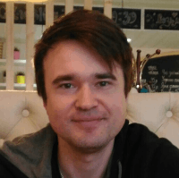

- Mikhail Kurilov
- contacts: tel: +79991892729 email: mvkurilov@mail.ru
- My main goal is to change the world to better condition.
I like to gain a new knowleges, thats why i start 'rolling-scope' course.
I never had experience in programming before, this course is challenge for me. Why i start it?
In august i drink beer with my old friend - he is teacher and programmer same time.
I tell him about my idea of service for truck drivers. We discuss it.
So, one moment he ask me: Why you not try to do it by yourself, this is good experience? its not too difficult.
I ask myself: why not? I often born an ideas in my mind and i decide this would be very useful skills.
Especially i always thought that programming is the most difficult thing among 'thinking professions'.
I worked engineer over 5 years, also i was businessman more than 8 years
(I was truck owner, i had a night club, later several points of street food and rock bar finely).
I can create poetry, I read books.
- I dont have skills in programming
- not yet
- not yet
- UdSU economist, UdSU english teacher (not enough practice in this point), law courses.
Im not a humanitarian at the 100%, i started as physicist but after two years of study and my first work i moved to economic faculty.
- I thought my english better, but test shows that i have only A+ level.
My weakness is a grammar and some special words probably but i can catch the main theme and make a respond.